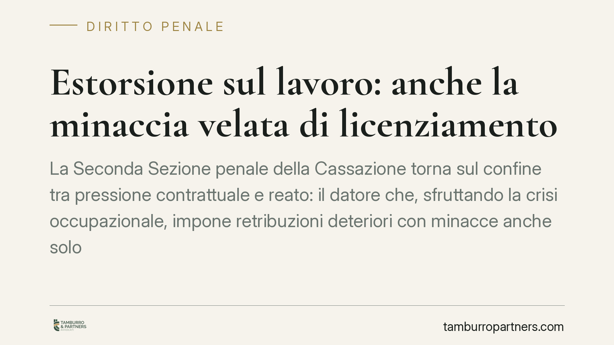

Estorsione sul lavoro: anche la minaccia velata di licenziamento
La Seconda Sezione penale della Cassazione torna sul confine tra pressione contrattuale e reato: il datore che, sfruttando la crisi occupazionale, impone retribuzioni deteriori con minacce anche solo velate di licenziamento può rispondere di estorsione. Una lettura che incide sia sulla responsabilità penale dell'imprenditore sia sulle tutele risarcitorie del lavoratore costituito parte civile.

Il caso
Una recente pronuncia della Seconda Sezione penale della Cassazione (riferimento in corso di verifica presso le fonti ufficiali) ha confermato la condanna di due fratelli, titolari di un'impresa, per estorsione ai danni di propri dipendenti.
Lo schema contestato: approfittando di un contesto occupazionale debole, i datori avevano imposto condizioni retributive peggiorative rispetto a quelle dovute, accompagnando la richiesta con la prospettiva — mai formalizzata apertamente — della perdita del posto di lavoro.
Il punto nodale non è stato il contenuto economico dell'accordo, ma il modo in cui il consenso del lavoratore era stato ottenuto.
Inquadramento normativo
L'art. 629 c.p. punisce chi, mediante violenza o minaccia, costringe taluno a fare o omettere qualcosa, procurando a sé un ingiusto profitto con altrui danno. L'estorsione è reato procedibile d'ufficio: non occorre querela della persona offesa perché l'azione penale possa essere esercitata.
Il profilo decisivo riguarda la natura della minaccia. La giurisprudenza riconosce da tempo che la minaccia rilevante non deve essere esplicita: può essere implicita, ambientale o "velata", purché idonea a coartare la volontà della vittima tenuto conto delle circostanze concrete. Nel rapporto di lavoro, la prospettazione anche indiretta del licenziamento — in un contesto in cui il dipendente non ha reali alternative occupazionali — può integrare questa coazione.
La differenza con una legittima trattativa contrattuale sta proprio qui: un conto è negoziare condizioni (anche sfavorevoli) in un confronto tra parti libere; altro è ottenere l'adesione sfruttando il timore di una conseguenza ingiusta, come la perdita del lavoro usata come leva.
Sul versante risarcitorio, il titolo in sede penale si fonda sull'art. 185 c.p., che obbliga al risarcimento del danno chi ha commesso un reato. È questa la norma che consente al lavoratore di costituirsi parte civile e ottenere il ristoro nel processo penale. L'art. 2043 c.c. resta la cornice generale dell'illecito civile, ma non è il riferimento tecnico del risarcimento da reato in sede penale.
Lo standard probatorio civile
Ai fini della quantificazione e del riconoscimento del danno, in sede civile e risarcitoria trova applicazione il criterio del "più probabile che non": il nesso causale tra condotta e danno si ritiene provato quando la sua esistenza risulta più probabile della sua inesistenza.
È uno standard meno rigoroso di quello penale ("oltre ogni ragionevole dubbio") ed è stato affermato in modo chiaro dalle Sezioni Unite civili (sent. n. 576/2008) e costantemente ribadito dalla giurisprudenza successiva. In concreto, significa che la valutazione del danno risarcibile al lavoratore segue regole probatorie più favorevoli rispetto all'accertamento della responsabilità penale.
Implicazioni pratiche
Per il datore di lavoro, la pronuncia ribadisce che la liceità di un accordo non dipende solo dal suo contenuto, ma dal modo in cui è stato raggiunto. Condizioni ottenute facendo leva sul timore del licenziamento espongono a un rischio penale concreto, indipendentemente dal fatto che il lavoratore abbia firmato.
Per il lavoratore, emerge che la "firma" apposta sotto pressione non sana l'illecito e che la posizione di parte offesa consente, in presenza dei presupposti, il risarcimento del danno già nel processo penale.
Cosa fare in concreto
Per i datori di lavoro:
- Documenta ogni modifica delle condizioni retributive con atti formali e tracciabili, evitando pressioni verbali o informali.
- Verifica la coerenza dei trattamenti applicati con CCNL e minimi di legge, per non esporre l'accordo a contestazioni.
Per i lavoratori:
- Conserva comunicazioni, messaggi e testimonianze che documentino le pressioni ricevute: la tempestività nel preservare le prove è decisiva.
- Presenta denuncia all'autorità giudiziaria; trattandosi di reato procedibile d'ufficio, non è necessaria una querela entro termini di decadenza.
- È opportuna una valutazione caso per caso della singola vicenda, perché il confine tra trattativa lecita e coazione dipende dalle circostanze concrete.
Conclusioni
La decisione conferma un principio di rilievo: la debolezza contrattuale del lavoratore non è una zona franca. Quando la minaccia — anche implicita — del licenziamento diventa strumento per imporre condizioni ingiuste, il confine con l'estorsione può essere superato. Resta ferma l'opportunità di verificare numero e anno esatti della pronuncia presso le fonti ufficiali prima di qualsiasi uso processuale.
Ogni condominio ha una storia a sé.
Se gestisci un'amministrazione e vuoi un confronto su una specifica questione condominiale, scrivi allo studio. Ti rispondiamo entro un giorno lavorativo.